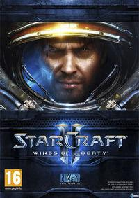

Top de los mejores 10 Juegos en la actualidad
1. Elden Ring

Elden Ring es el nuevo videojuego de rol, aventura y acción de FromSoftware y Bandai Namco. Ideado por Hidetaka Miyazaki y George R.R. Martin, el escritor de Canción de hielo y fuego, nos llevará a un mundo convulso, complejo y sangriento. En esta ocasión, el equipo de Dark Souls ha aumentado la escala del título, trasladando y depurando su conocida jugabilidad a una nueva dimensión.
2. Half-Life: Alyx
Half-Life: Alyx es el nuevo shooter de acción y aventura en primera persona para PC desarrollado por Valve, en esta ocasión en exclusiva para la realidad virtual. En esta secuela, que ocurre justo antes de Half-Life 2 de forma cronológica, conoceremos la historia de Alyx Vance, la hacker de la segunda entrega, invitándonos a luchar contra los Combine en el entorno opresivo y postapocalíptico. Diseñado para la realidad virtual, es compatible con Valve Index, el headset de la empresa.
3. Baldur's Gate 3
Baldur's Gate 3 es la tercera parte de la emblemática saga de videojuegos de rol Baldur's Gate. Considerada como una de las series más influyentes de la historia, en esta ocasión, los encargados de darle vida son los desarrolladores de Larian Studios, creadores de Divinity, prometiendo gran fidelidad a los manuales de Dragones y Mazmorras en su quinta edición, así como a la serie que dio origen a al rol occidental más puro en los videojuegos .
4. Persona 5
Persona 5: Royal es la versión extendida y mejorada del exitoso videojuego del rol japonés producido por ATLUS para consolas. La quinta entrega tiene ahora una nueva edición que, si bien nos sigue contando una épica historia en la que un grupo de estudiantes adolescentes tendrán que enfrentarse a una amenaza sobrenatural gracias a sus Persona, unos alter ego especiales, añadirá nuevas zonas, personajes y características jugables.
5. Portal 2
Portal 2 es un juego de puzles desarrollado y publicado por Valve para PlayStation 3, Xbox 360 y PC. Después de demostrar cómo tenía que ser un juego de puzles en primer persona con el primer Portal (2007), siendo una aventura tan redonda que parecía difícilmente mejorable, Valve se volvió a superar, un título más ambicioso, complejo y simpático, y con modo cooperativo, para ofrecer uno de los mejores juegos de puzles de la historia.
6. Half-life 2
Half-Life 2, desarrollado y publicado por Valve Corporation, es un videojuego de disparos en primera persona lanzado en 2004. Como secuela del aclamado Half-Life, este título continúa la historia de Gordon Freeman, un físico teórico que se convierte en un improbable héroe en la lucha contra una ocupación alienígena en la Tierra.
7. StarCraft II
StarCraft II: Wings of Liberty es un videojuego de estrategia en tiempo real desarrollado y publicado por Blizzard Entertainment. Fue lanzado el 27 de julio de 2010 como la primera parte de la trilogía StarCraft II, que sirve como la continuación directa de StarCraft (1998). El juego se centra en la campaña de los Terran y está ambientado en un universo de ciencia ficción, donde tres razas luchan por el control de la galaxia: los Terran, los Zerg y los Protoss.
8. The Elder Scrolls V

The Elder Scrolls V: Skyrim es un juego de RPG desarrollado por Bethesda Game Studios y publicado por y publicado por Bethesda Softworks para PlayStation 3, PlayStation 4, PlayStation 5, Xbox 360, Xbox One, Xbox Series, Nintendo Switch y PC. El juego de rol más vendido de la historia con más de 60 millones de copias y ya todo un clásico de los videojuegos, una espectacular aventura en mundo abierto que nos lleva al frío territorio de Skyrim, una provincia de Tamriel, poniéndonos en la piel del Dovahkiin o Sangre de Dragón, un héroe profetizado con poderes místicos de los dragones, en un juego inmenso lleno de misiones e historias en el que podemos jugar con absoluta libertad.
9. BioShock

BioShock es un shooter en primera persona desarrollado por Irrational Games y publicado por 2K para PlayStation 3, Xbox 360, PC y dispositivos móviles iOS. Todo un clásico de los videojuegos, una apasionante aventura ambientada en la ciudad utópica submarina de Rapture, en un juego con disparos, poderes sobrenaturales, exploración y puzles en una ambientación y una historia inolvidables.
10. Grand Theft Auto V

Grand Theft Auto V para PC es una versión ampliamente mejorada del originalmente desarrollado por Rockstar North y lanzado por Rockstar Games. Esta versión de PC se lanzó en abril de 2015, aproximadamente un año y medio después de su debut en consolas de la generación anterior, y trajo consigo una serie de mejoras técnicas y nuevas características destinadas a aprovechar la capacidad de hardware más avanzada disponible en PC.